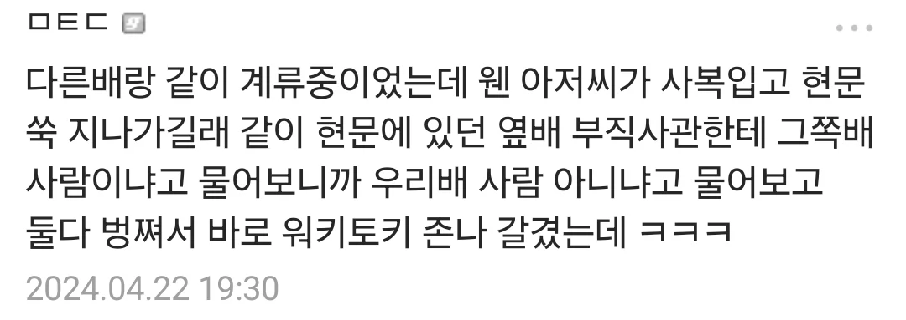
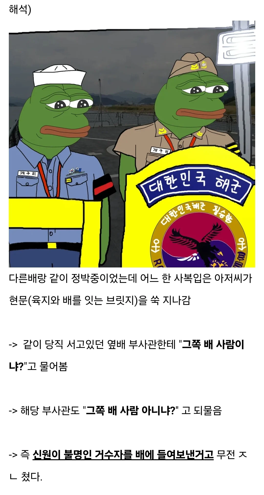

추가 설명) 부두-우리배-옆배
옆배로 가려면 우리배를 지나쳐야 함


추가 설명) 부두-우리배-옆배
옆배로 가려면 우리배를 지나쳐야 함
백명넘어가서 일병달아도 다외우기 개빡샘ㄹㅇㅋㅋ
독도는 그래서 현문당직 특이하게하던데 ㅋㅋ
항모는 어케하는지 존나 궁금하네 ㅋㅋㅋ
옆구리 문 열어서 다리대신 썼던거같은데
그것도 그렇고 사람이 많으니까 총원명부 체크하는게 전자식인가 그랬던거 같음 ㅋㅋ
새벽에 일어나서 다 외우게 하지 않음?
이등병때 하루에 3시간을 못잤었는데... 씹새끼들...
나 14년도인데 그렇게배웠고 그렇게했다가 휴가 3일잘렸다 ㅋㅎㅋ
난 배 내릴때까지 후임이 없어서 시킬 사람이 없었음...
그래서 나는 잠수함 근무할 때 당직이면 함수 해치 잠금ㅋㅋㅋㅋ 잠수함 현문부스는 문 여는 시간 때문에 누가 뛰어서오면 막을수도 없다
난 기관부라 항상 현문한테 감사한 마음으로 섰음ㅋㅋ
그래서 거수자 정체가 뭐냐
보통 육상당직사령임
그때 배에서 당직서는 당직사관 군기잡으려고 배에 침입 많이함ㅋㅋㅋ
홋줄 매달려서 함수로 들어온 사람도 있었다고함ㅋㅋㅋ
잘못하면 뒤질거같은데 그건 ㅋㅋㅋ
시건해야지
해군출신인데 현문당직 너무 인력낭비라고 생각했음
외국도 아니고 우리 군항내면 더 효율적인 방법많을텐데
미해군은 즈그 나라 땅인데 방탄조끼에 총들고 있기도함. 코인 바꾸러 갔는데 둘이서 엠포 들고 다가와서 쫄음
ㅋㅋㅋㅋㅋㅋㅋㅋㅋㅋㅋㅋㅋㅋ
말년에 해작사에 UFG로 핵항모 입항후에 현문가보니 진짜 지리던데ㅋㅋㅋㅋㅋ 미군이 현문당직은 어케서는지 기억 가물하네.
해군만화에서 봤던 내용같은데. 요즘도 연재 계속하나?
해군특) 아저씨 없고 기수순으로 선후임이다
정보 감사합니다..
https://www.dogdrip.net/729888364
다른 군사 관련 글도 봐주시면 감사드리겠습니다! ㅎㅎ
막내때 옆 배 사람들한테도 다 경례한거 생각나네 ㅅㅂ